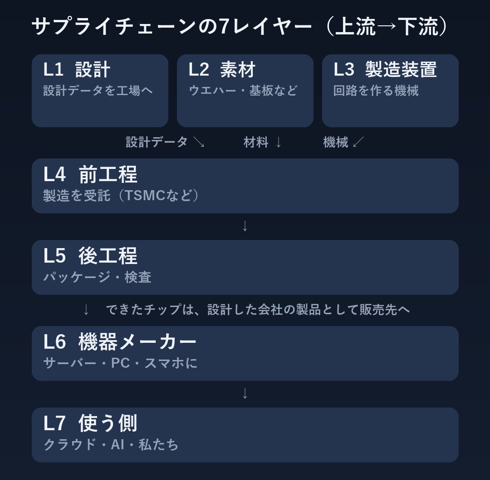

半導体の特集｜第1回
半導体の全体像：素材からクラウドまで
半導体は、まず設計から始まります。設計データと素材、製造装置の3つが工場に集まってチップになり、機器に組み込まれて使われます。この流れをサプライチェーンの7つのレイヤー（上流から下流）に分けて、どのレイヤーで何が作られ、どんな会社がいるのか、部品の不足や値上げがどう伝わるのかを、まず全体の地図で見ておきます。


レイヤー1 設計（ファブレス）
チップを設計する会社。自分の工場を持たないファブレスは、設計データを TSMC などに渡して製造を委託する。インテルやサムスン電子のように、設計も製造も自社でする会社（IDM）もある。
- GPU・CPU・AI半導体の設計（ファブレス）：エヌビディア、AMD、ブロードコム、クアルコム、Arm、アップル
- 設計も製造もする会社（IDM）：インテル、サムスン電子
レイヤー2 素材
シリコンのウエハー、回路づくりに使う薬品・ガス、基板（パッケージ基板・PCB）とその材料（ガラスクロス・ABF・CCL）。
- シリコンウエハー：信越化学、SUMCO、GlobalWafers、Siltronic
- 薬品・ガス・フォトレジスト：JSR、東京応化、Entegris
- 基板の材料（ガラスクロス・ABF・CCL）：日東紡、味の素、レゾナック、台燿（TUC）、台光電（EMC）、聯茂（ITEQ）
- 基板（パッケージ基板・PCB）：イビデン、新光電気、Unimicron、AT&S
レイヤー3 製造装置
ウエハーに回路を焼き付けたり、削ったり、検査したりする機械。
- 前工程の装置：ASML、東京エレクトロン、アプライド・マテリアルズ、ラムリサーチ、KLA、レーザーテック、SCREEN、KOKUSAI ELECTRIC、ASM International
- 後工程・検査の装置：ディスコ、アドバンテスト、テラダイン
レイヤー4 前工程（チップを作る）
受け取った設計データをもとに、ウエハーの上に回路を作る工程。製造を受託するファウンドリと、メモリーの会社がある。
- ファウンドリ（受託生産）：TSMC、サムスン電子、インテル
- メモリー（DRAM・HBM・NAND）：SK hynix、サムスン電子、マイクロン、南亜科技、CXMT
レイヤー5 後工程（パッケージ・検査）
チップを切り分けてパッケージ基板に載せ、パッケージにして検査する工程。後工程まで、ファウンドリがまとめて受けることもある。できたチップは、設計した会社の製品として、機器メーカーなどの販売先に売られる。
- OSAT（組み立て・検査の受託）：ASE、Amkor、JCET、Powertech
レイヤー6 機器メーカー（組み立て）
チップや部品を組み合わせて、サーバー・パソコン・スマホにする。
- サーバー：鴻海（Foxconn）、Quanta、Wistron、Supermicro、Dell、HPE
- PC・スマホ：アップル、レノボ、HP、Dell、Acer、ASUS、サムスン電子
- 一般のプリント基板（産業機器など）：多くの会社
レイヤー7 使う側
クラウドの大手やAI企業、車や家電を買う個人や企業。
- クラウド・AI：マイクロソフト、アマゾン、アルファベット、メタ、オラクル、OpenAI、Anthropic
- 自動車・消費者・企業：テスラ
2つの流れ
- 部品の不足や値上げは、上流から下流へ伝わる。たとえばメモリーの値上がりは、サーバーやパソコンのコストに出てくる。
- AIへの投資のお金は、下流から上流へ流れる。クラウド大手の設備投資が、チップの会社、工場、製造装置の会社の売上になる。
上流の動きは、下流のどこに出てくるか
決算やニュースを読むときの目安。決まった法則ではなく、将来を予想するものではありません。
- 材料・部品の値上げ（CCL・ガラスクロス・メモリーなど）
→ 下流の粗利益率、製品の値上げ、決算での「コスト増」の説明 - 供給不足・リードタイムの長期化・見積もり停止
→ 下流の出荷の制約、決算での「供給制約」の説明、受注残 - 生産終了（EOL。例：DDR4）・HBMへの生産の集中
→ PC・サーバー・産業機器の部品の切り替え、旧型部品の価格 - クラウド大手の設備投資の増減
→ AI半導体の売上 → 前工程・後工程の稼働 → 製造装置の受注 - 製造装置の受注・前工程の稼働率
→ 数四半期あとの生産能力（供給の増減） - 下流の在庫の積み上がり
→ 上流の受注の減速（サイクルの転換のサイン）
次回からは、テーマを1つずつ深く見ていきます。
【次回からの予定】第2回は12月6日（日）。その後は毎週日曜に更新します
- 第2回（12/6）：NVIDIAはなぜ自社の工場を持たないのか？
- 第3回（12/13）：TSMC・サムスン・インテルの製造の競争
- 第4回（12/20）：半導体はなぜ足りなくなったり、余ったりするのか？
- 第5回（12/27）：半導体に使われる金・銀・銅
- 第6回（1/3）：AIブームで値上がりする材料とは？
- 第2回からは、note の有料記事になります。
- note：https://note.com/nasdaqwhy
※情報提供のみ。投資判断はご自身でお願いします。※Nasdaq Whyは独立した情報メディアです。Nasdaq, Inc.およびその関連会社とは関係ありません。